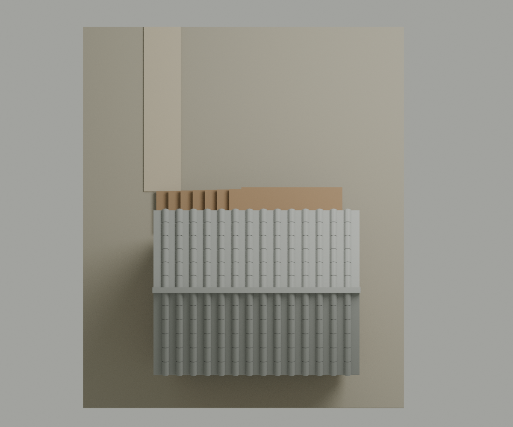
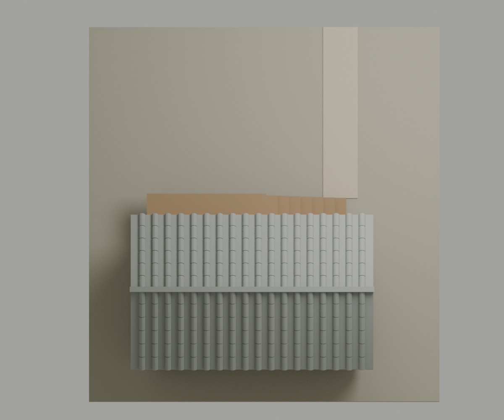
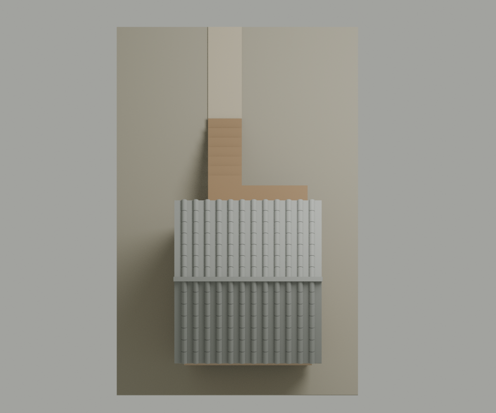
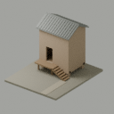
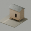
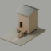
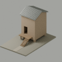

矩形仓、双坡顶、架空基部
馆方照片可见封闭仓体、简明屋面、瓦垄、短足与小孔。这里继承的是形体关系，不是直接放大的陶明器尺寸。
河南博物院 · 原始藏品页 ↗建筑模型 / 东汉明器启发
把封闭的仓体、抬起的基部与到达路径，组织成一个可读的粮食转运场所。
面向三国题材端游 SLG 的原创转译。
不是汉末建筑的实证复原。

01 封闭体块少量开孔让高仓体而非窗格成为识别主角。
02 梯廊到达由彩绘关系转译为三维路径；尺度与支撑为设计假设。
03 前场留白原创作业区与路径，不把未见于参考的院落说成遗址。
02 / 比较
仓体比例、梯的朝向和前场纵深随方案变化。以前视读轮廓，再切到背面或近垂直俯视检查关系。
| 方案 | 仓体宽 × 深 × 墙高 | 前场参数 | 到达关系 |
|---|---|---|---|
| A 侧入 · 紧凑前场 | 4.2 × 3.2 × 4.6 | 4.0 | 右侧向木梯 → 偏门窄廊 |
| B 反向 · 横向宽仓 | 5.4 × 3.2 × 4.2 | 4.4 | 左侧向木梯 → 宽仓前廊 |
| C 直入 · 纵深前场 | 3.6 × 4.0 × 5.0 | 4.8 | 前向木梯 → 延伸平台 |
03 / SLG 读取
近垂直俯视用于比较屋顶占比、路径偏置与前场留白。前场朝画面上方；这不是测绘正投影、已确定的游戏相机或引擎性能测试。



读图对照：Anya Jo Elvidge ·《Total War: Three Kingdoms》战役地图作品 ↗。聚落与植被署名 Anya Elvidge，地图环境 Greg Smith。仅比较屋顶群、路径与空地的识别关系，不作为历史证据，也不移用其模型或图片。
64 / 128 像素离线样本按原尺寸显示。这只观察轮廓损失，不是目标像素预算或引擎截图。




当前观察：近垂直俯视压低了仓体的高度差，入口也容易被檐遮蔽。下一步应在真实游戏倾角与缩放下检查，而不是凭近景细节宣布“远景可读”。
04 / 证据边界
主参考为河南博物院藏、1963 年河南密县后士郭 1 号东汉墓出土的收租图陶仓楼。东汉的年代范围不能擅自缩窄为汉末。
馆方照片可见封闭仓体、简明屋面、瓦垄、短足与小孔。这里继承的是形体关系，不是直接放大的陶明器尺寸。
河南博物院 · 原始藏品页 ↗参考正面的梯、廊主要由彩绘表达。本模型的深度、门扉、支撑与可行走空间属于推定，不能由照片当作构造测绘。
前场布局、到达方向和三种比例为游戏场所设计；土色墙、木色梯与灰屋顶也是美术方案，不是已测得的古建筑色彩。
南越王博物院的板瓦与筒瓦帮助区分陶瓦弧片与直扁金属肋。这是西汉岭南宫署材料的跨地域比较，不证明新密仓采用同瓦制。这里的曲率、分段、厚度和材质均是美术推定，未添加铭文或宫廷纹饰。
墓葬明器带有观念与艺术表达，不能一概当作缩尺实录。本轮没有同区域、明确分期的仓储基址与构造测绘，也未证明该仓的军事或官署用途。
李思思《汉代建筑明器研究》· 中国国家博物馆 ↗完整参考摘记与逐项边界 ↗。公开页面只使用本项目模型渲染。机构参考照片仅内部核对，未取得再发布许可，不随页面分发。
05 / 当前边界
当前绑定已冻结的三组几何与同版图像。实际 GLB 导出再导入后的有向三角集合一致；Three.js r180 CPU 解析成功。包含型穿插仍未全域证明排除，200–248 个网格、约 0.93–1.18 万三角也未按大规模 SLG 预算验证。
主图录采用静态图像，不要求 WebGL。可选观察器单独按需加载一份模型，不是可漫游的空间作品。实时性能、LOD、碰撞、导航及手机引擎表现不在本轮已验证范围。